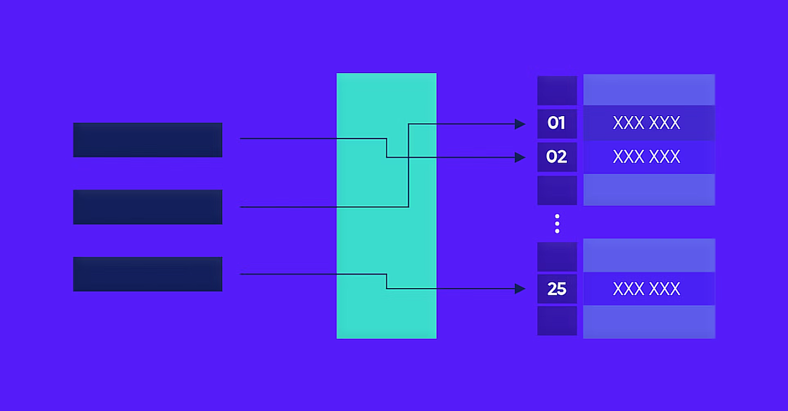
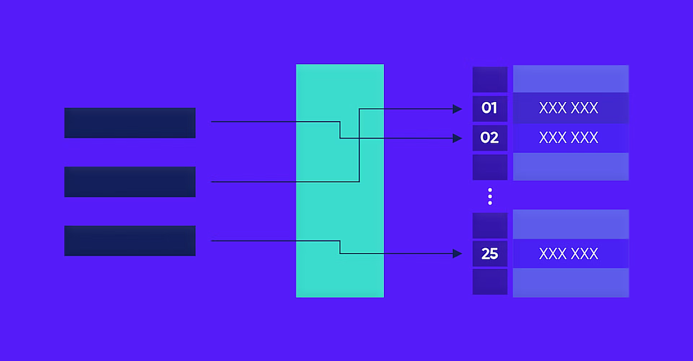

¿Qué es ISC?
La Ingeniería en Sistemas Computacionales es una carrera enfocada en la creación, implementación y mantenimiento de sistemas informáticos. Los ingenieros en sistemas se especializan en el desarrollo de software, bases de datos, redes y seguridad informática.
Materias
- Programación
- Algoritmos y Estructuras de Datos
- Bases de Datos
- Redes de Computadoras
- Seguridad Informática
- Inteligencia Artificial
Salidas Profesionales
Los egresados de Ingeniería en Sistemas Computacionales pueden trabajar en diversas áreas, tales como:
- Desarrollo de Software
- Administración de Bases de Datos
- Seguridad Informática
- Gestión de Proyectos Tecnológicos
- Consultoría en TI
Galería
 



Contacto
Para más información, puedes contactarnos a través del siguiente formulario: